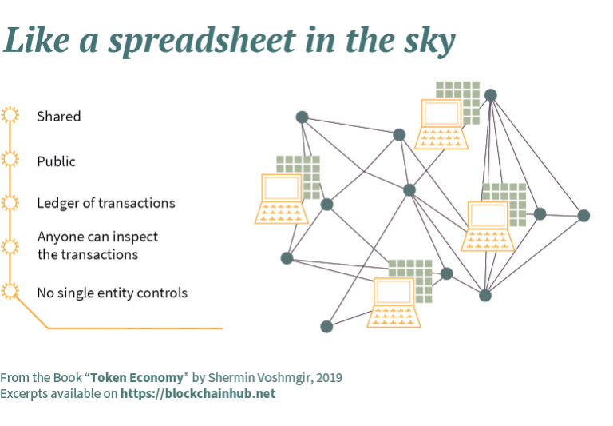
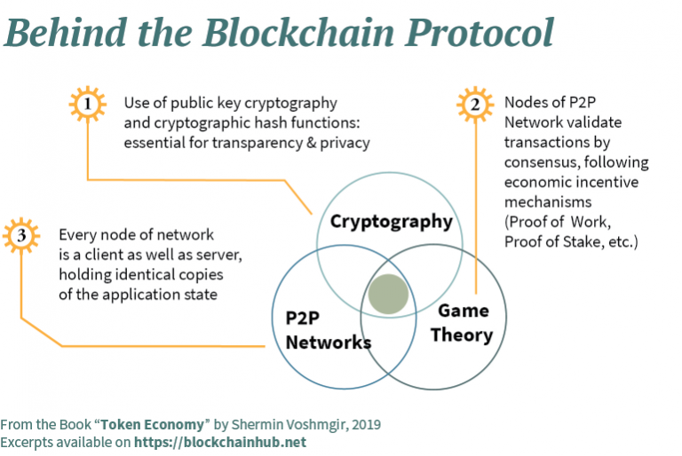
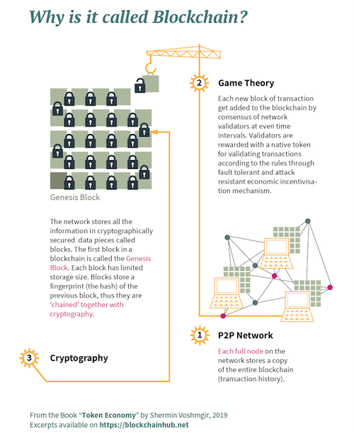
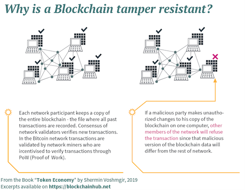
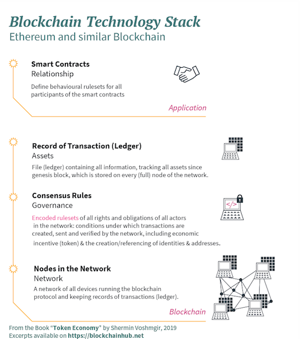

What is Blockchain?
6 December, 2019
The concept of Blockchain first came to fame in October 2008, as part of a proposal for Bitcoin, with the aim to create P2P money without banks. Bitcoin introduced a novel solution to the age-old human problem of trust. The underlying blockchain technology allows us to trust the outputs of the system without trusting any actor within it. People and institutions who do not know or trust each other, reside in different countries, are subject to different jurisdictions, and who have no legally binding agreements with each other, can now interact over the Internet without the need for trusted third parties like banks, Internet platforms, or other types of clearing institutions.
However, the Bitcoin white paper didn’t come out of thin air, and P2P networks are not a new phenomenon. They are rooted in the early history of the computer and Internet, building on decades of research of computer networks, cryptography, and game theory (see Appendix: Origins of Bitcoin). The Bitcoin white paper resolved the problem of centralized data storage and information management. All computers in the network hold an identical copy of the ledger of transactions, which acts as a single point of reference. Storing data across a P2P network eliminates problems arising from the vulnerability of centralized servers while using different cryptographic methods to secure the network.
Blockchain hereby provides a universal state layer, a universal data set that every actor can trust, even though they might not know or trust each other. This new form of distributed data storage and management also avoids the double-spending problem of existing value transfer over the Internet. Ideas around cryptographically secured P2P networks have been discussed in the academic environment in different evolutionary stages, mostly in theoretical papers, since the 1980s. However, before the emergence of Bitcoin, there has never been a practical implementation of a P2P network that managed to avoid the double-spending problem, without the need for trusted intermediaries guaranteeing value exchange.
The open exchange of information is fundamental to open source projects and allows them to be more cost-effective, flexible, and secure.
Double-Spending Problem:The way the Internet is designed today, one can spend the same value – issued as a digital asset – multiple times, because digital information can be copied, and copies of that same digital le can be sent from one computer to multiple other computers at the same time. Physical values, on the other hand, don’t have that problem. They cannot be easily replicated, as the parties involved in a transaction can immediately verify the physical token – a bill, a coin, or another object of value, like a commodity or a collectable. While counterfeiting physical values like bills and coins is theoretically possible, it usually requires considerable expertise, since they are designed to be hard (and expensive) to copy.
Distributed Ledger: The Bitcoin blockchain protocol introduced a mechanism of making it expensive to copy digital values. A copy of the ledger is stored on multiple devices of a cryptographically secured P2P network. The ledger is a le, also called blockchain. It maintains a continuously growing list of transaction data records, chained in blocks that are cryptographically secured from tampering and revision. In order to change the contents of that ledger, network users need to reach a mutual agreement, also referred to as consensus. Blockchain can, therefore, be described as a shared, trusted, public ledger of transactions, that everyone can inspect, but which no single user controls. The ledger is built as a linked list – or chain of blocks – where each block contains a certain number of transactions that were validated by the network in a given timespan. Each block furthermore includes the cryptographic hash of the prior block in the blockchain, linking one block with another into a chain of blocks, which guarantees the integrity of the previous block all the way back to the first block, the genesis block. Since the ledger records transactions across many computers, data on the blockchain cannot be altered retroactively, without the alteration of all subsequent blocks.
Unlike distributed databases, where data is distributed but managed and controlled by one single entity, blockchains allow for distributed control. Different people and institutions, that do not trust each other, share information without requiring a central administrator. Each independent node has the latest version of the ledger, which contains all transactions that have ever been made, and can verify transactions. This is particularly useful in inter-organizational setups where no institution wants to trust another institution with the management of their data.

Blockchain and derived technologies provide a universal and transparent accounting and governance layer for the Internet. All network participants have equal access to the same data in real-time. Transactions running over the network are transparent to all actors and can be traced back to their origin. Blockchain can also be described as a distributed accounting machine or a supranational governance machine that is public and transparent. When the network validates a transaction by majority consensus, the transaction is permanently written to the blockchain. Otherwise, the transaction is rejected and does not go through. Only transactions that have been included in the blockchain are considered as valid and final.
A Blockchain protocol operates on top of the Internet, on a P2P network of computers that all run the protocol and hold an identical copy of the ledger of transactions, enabling P2P value transactions without a middleman though machine consensus. Blockchain itself a file – a shared and public ledger of transactions that records all transactions from the genesis block (first block) until today.
Blockchain is a shared, trusted, public ledger of transactions, that everyone can inspect but which no single user controls. It is a distributed database that maintains a continuously growing list of transaction data records, cryptographically secured from tampering and revision.
The ledger is built using a linked list, or chain of blocks, where each block contains a certain number of transactions that were validated by the network in a given timespan. The crypto-economic rulesets of the blockchain protocol (consensus layer) regulate the behavioral rulesets and incentive mechanism of all stakeholders in the network.
 
This ledger runs on a peer-to-peer (P2P) network of computers. Distributed consensus-based on economic incentive mechanisms (game theory) combined with cryptography allows for secure P2P validation of transactions, thus bypassing the need for traditional trusted third parties. It first came to fame in October 2008 as part of a proposal for Bitcoin, with the aim to create P2P money without banks. All network transactions get stored in the blockchain: Imagine Google Docs: Each person has the latest version of the document, and everybody can inspect it. In order to change the contents of the doc, users need to reach a mutual agreement (consensus). As opposed to Google Docs the file is not centrally stored, but each node of the network keeps a copy of the blockchain – the distributed ledger recording all transaction history.
Removing the Middle Man with Machine Consensus
Instead of a single trusted third-party validating transaction through their servers with authority (single vote), a peer to peer network of computers running the blockchain protocol validate transactions by consensus (majority vote). The blockchain protocol, therefore, formalizes pre-defined consensus rules for validating transactions on the P2P network, as hard-coded governance rules, managing, and auto enforcing transactions of all participants in the network.

In the case of Bitcoin, instead of bank validating financial transactions – like sending money from A to B – checking the digital ledger of who owns what stored on their server, a P2P network of computers running the bitcoin protocol validate transactions by majority consensus. The consensus rules of the Bitcoin network govern how the participants in the network interact with each other. They define:
- Under which conditions a transaction – sending money from A to B – is valid.
- Transaction costs related to sending money from A to B.
- Game-theoretic incentive mechanism for validating transactions with a cryptographic token.
- Rules of how to change current consensus rules.
Smart Contracts
Blockchain was initially designed for P2P money only. But it soon showed the potential to be used for any kind of P2P value transaction on top of the Internet. The Ethereum project thus introduced the idea of decoupling the contract layer from the blockchain layer, where the ledger itself is used by smart contracts that trigger transactions automatically when certain pre-defined conditions are met. By decoupling the smart contract layer from the blockchain layer, blockchains like Ethereum aim to provide a more flexible development environment than the Bitcoin blockchain.

These smart contracts are a piece of code running on top of a blockchain network, where digital assets are controlled by that piece of code implementing arbitrary rules. They have properties of contractual agreements but should not be confused with legal contracts.
If and when all parties to the smart contract fulfil the pre-defined arbitrary rules, the smart contract will auto execute the transaction. These smart contracts aim to provide transaction security superior to traditional contract law and reduce transaction costs of coordination and enforcement.
Smart contracts can be used for simple economic transactions like sending money from A to B. They can also be used for registering any kind of ownership and property rights like land registries and intellectual property, or managing smart access control for the sharing economy, just to name a few. Furthermore, smart contracts can be used for more complex transactions like governing a group of people that share the same interests and goals. Decentralized Autonomous Organizations, DAOs, are such an example for more complex smart contracts.
With blockchains and smart contracts, we can now imagine a world in which contracts are embedded in digital code and stored in transparent, shared databases, where they are protected from deletion, tampering, and revision. In this world, every agreement, every process, task, and payment would have a digital record and signature that could be identified, validated, stored, and shared.
Intermediaries like lawyers, brokers, and bankers, and public administrators might no longer be necessary. Individuals, organizations, machines, and algorithms would freely transact and interact with one another with little friction and a fraction of current transaction costs.
Therefore, blockchains & smart contracts:
- Radically reduce transaction costs (bureaucracy) through machine consensus and auto-enforceable code.
- Bypass the traditional principal-agent dilemmas of organizations, thus providing an operating system for what some refer to as “trustless trust”. This means that you don’t have to trust people and organizations, you trust code, which is open source and provides transparent processes.